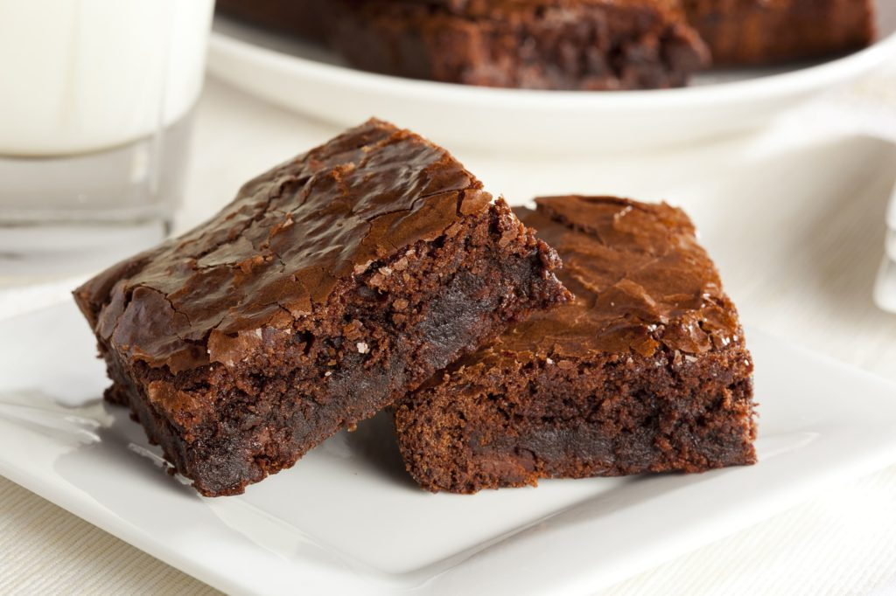

Receita: Brownie 🍫
Utensílios
- Tigela
- Forma
- Prato de mesa
- Espatula
- Fouet
Ingredientes
- Manteiga
- Achocolatado
- Açúcar
- Farinha de trigo
- Ovo
Modo de Preparo
⏲
Modo de preparo: 30
- Derreta a manteiga e reserve
- Enquanto derrete a manteiga, misture os 3 ovos e 6 colheres de açúcar, e misture bem
- Acrescente a manteiga derretida no ovo e o açúcar
- Agora misture 3 xícara de achocolatado e 12 colheres de trigo
- Unte uma forma com manteiga e achocolatado
- Leve ao forno a 180° C por 30 minutos
